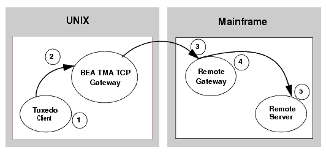
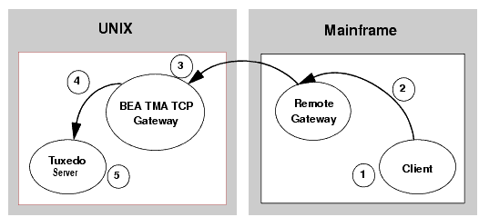

Configuring Oracle Tuxedo Mainframe Adapter for TCP Security
The TMA TCP product supports a security feature that allows a requester from Oracle Tuxedo services to pass a user ID requirement through the OTMA or CICS server interfaces for verification through a third-party security package.
Note:
The security feature on Tuxedo Mainframe Adapter for TCP (IMS) (hereafter referenced as TMA TCP for IMS) runs as an OTMA client only.
Security Checking from Tuxedo to Mainframe
Figure 3-1 depicts the process flow for security verifications from TMA TCP Gateway on UNIX to a mainframe.
Figure 3-1 Security Checking for UNIX to Mainframe Transactions

Verify the user is valid on UNIX. For valid users, access is given; for invalid users, access is rejected.
Verify user name (reviewing the tpusr file), group (reviewing the tpgrp file), and ACL (reviewing the tpacl file). If all three pass, the transaction request processes. If any one of the three are rejected, the transaction request stops and a security violation occurs.
Note:
The user IDs in these files must match in the Tuxedo and the mainframe environments or a security violation occurs.
Accept the transaction request at the mainframe gateway based on the request coming from a trusted source. No password is passed.
Verify the user name associated with the transaction against the security system (such as RACF). If the user name is not valid, the request is rejected and a security violation occurs.
Complete the transaction request to the server.
Security Checking from Mainframe to UNIX
Figure 3-2 depicts the process flow for security verifications from a mainframe to TMA TCP Gateway on UNIX.
Figure 3-2 Security Checking for Mainframe to UNIX Transactions

Authorization checking is done by the mainframe security package prior to initiating the client.
Pass the transaction request from the client to the mainframe gateway.
Accept the transaction request at the UNIX gateway based on the request coming from a trusted source. No password is passed.
Decode the appkey to obtain the user and group numbers. Verify the user name against the security system. If the user name is valid and the user has the authority to run the transaction, the transaction request is accepted. If the user name is not valid, the request is rejected and a security violation occurs.
Complete the transaction request to the server if the user name is accepted.
Setting Up Security for TMA TCP for IMS
The TMA TCP for IMS product has an OTMA interface that supports enhanced security. This interface allows a requester from Oracle Tuxedo services to pass a user ID through the OTMA server interface for authorization through your security package.
Securing Connections from IMS to UNIX
Complete the following tasks to enable the connection security feature.
Specify the ACCOUNT and PASSWORD parameters in the GATEWAY configuration statement for local or remote gateways.
Verify that the parameter values for ACCOUNT and PASSWORD in the GATEWAY statement match the RMTACCT and PASSWORD values in the *FOREIGN section of the TMA TCP Gateway GWICONFIG file.
Securing Connections from IMS to IMS
Complete the following tasks to enable the connection security feature.
Specify the ACCOUNT and PASSWORD parameters in the GATEWAY configuration statement for local or remote gateways.
Verify that the parameter values for ACCOUNT and PASSWORD in the GATEWAY statement for the GATEWAY TYPE=LOCAL match the ACCOUNT and PASSWORD values in the GATEWAY TYPE=REMOTE statement.
Securing Connections from IMS to CICS
Complete the following tasks to enable the connection security feature.
Specify the ACCOUNT and PASSWORD parameters in the GATEWAY TYPE=LOCAL configuration statement.
Verify that the parameter values for ACCOUNT and PASSWORD in the GATEWAYTYPE=LOCAL statement match the ACCOUNT and PASSWORD values in the User Account Connection screen.
Securing Services
Complete the following tasks to enable the service security feature.
Set up transaction security through the mainframe with the security administrator.
Specify OTMASECURITY=Y in the SYSTEM statement of your TMA TCP for IMS configuration file.
Set the security flag for each local service using the SECURITY parameter in SERVICE TYPE=LOCAL statement. For parameter information, refer to the
Defining Local Services section.
Issue the /SEC OTMA PROFILE command in IMS to enable security checking on a service by service basis for the OTMA interface. Issue the /SEC OTMA FULL command in IMS to enable security checking on all services.
WARNING:
If SECURITY=N in the SERVICE TYPE=LOCAL statement for any local service definition, issue /SEC OTMA PROFILE. A security failure results if you specify SECURITY=N and issue /SEC OTMA FULL command.